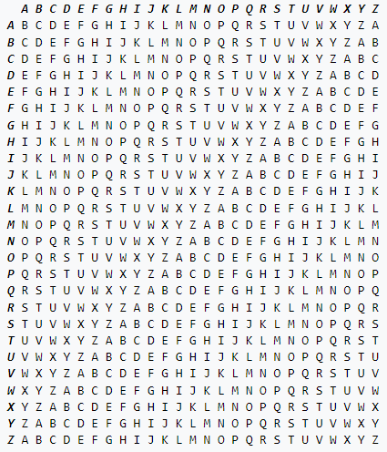
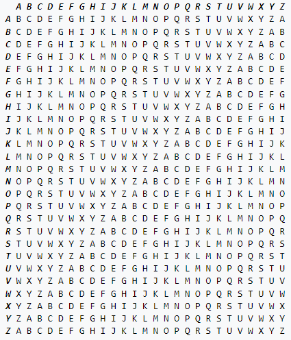

Erklärung
Das One-Time-Pad ist ein relativ simples aber auch sehr sicheres
Verschlüsselungsverfahren, wenn man ein paar Nachteile in Kauf
nimmt. Wenn man ein Klartext mit dem One-Time-Pad verschlüsseln will, braucht man einen
Schlüssel von der gleichen Länge wie der Klartext. Man nimmt dann den iten
Buchstaben des Klartext und des Schlüssels und addiert deren Zahl im Alphabet und
der Buchstabe, zu dem die entstandene Zahl gehört ist an der iten Stelle im
Chiffretext. Diese Addition kann man sich auch mit folgender Tabelle
veranschaulichen.

Hier ist Python-Code für das Verschlüsseln einer Nachricht "text" mit einem Schlüssel "key".

Hier ist Python-Code für das Verschlüsseln einer Nachricht "text" mit einem Schlüssel "key".
def encryptotp(text, key):
encryptedstring = ""
for i in range(len(text)):
char = text[i]
if char not in "abcdefghijklmnopqrstuvwxyzABCDEFGHIJKLMNOPQRSTUVWXYZ":
encryptedstring += char
elif (char.isupper()):
letter = chr(((ord(char.lower()) - 97) + (ord(key[i].lower()) - 97) + 1) % 26 + 97)
encryptedstring += letter.upper()
else:
encryptedstring += chr(((ord(char.lower()) - 97) + (ord(key[i].lower()) - 97) + 1) % 26 + 97)
return encryptedstring
Um die Verschlüsselung rückgängig zu machen, muss man den Schlüssel einfach wieder
subtrahieren. Der Code dafür ist der folgender.
def decryptotp(text, key):
decryptedstring = ""
for i in range(len(text)):
char = text[i]
if char not in "abcdefghijklmnopqrstuvwxyzABCDEFGHIJKLMNOPQRSTUVWXYZ":
decryptedstring += char
elif (char.isupper()):
letter= chr(((ord(char.lower()) - 97) - (ord(key[i].lower()) - 97) - 1) % 26 + 97)
decryptedstring += letter.upper()
else:
decryptedstring += chr(((ord(char.lower()) - 97) - (ord(key[i].lower()) - 97) - 1) % 26 + 97)
return decryptedstring
Man kann diese Art von Verschlüsselung auch für andere Alphabete benutzen, wie z.B.
Binary, indem man dann z.B. mod 2 anstatt mod 26 rechnet und anstatt Buchstaben nur
0 und 1 benutzt.
Sicherheit
Das One-Time-Pad ist ein extrem sicheres Verschlüsselungsverfahren. Rein
theoretisch ist es sogar perfekt sicher, was heißt, dass man von dem Chiffretext
keine Rückschlüsse auf den Klartext machen kann. Durch einen Satz von Shannon kann
man herausfinden, welche Anforderungen gelten müssen, damit ein
Verschlüsselungsverfahren perfekt sicher ist.
- Die Größe des Klartextraums muss gleich der des Schlüsselraums und der des Chiffretextraums sein.
- Für jeden Klartext und jeden Chiffretext existiert ein Schlüssel, sodass der Klartext verschlüsselt, mit diesem Schlüssel der Chiffretext ist.
- Die Wahrscheinlichkeitsverteilung mit der ein Schlüssel ausgewählt wird muss gleichverteilt sein
Nachteile
Obwohl das One-Time-Pad perfekt sicher ist, hat es immer noch andere Nachteile.
Der erste ist das die Schlüssel so groß wie der Klartext sein muss. Wenn man einen
riesigen Klartext verschlüsseln will, braucht man einen Schlüssel, der zur
Speicherung genauso viel Platz wie der Klartext braucht. Außerdem ist es schwierig
richtigen Zufall zu generieren und ohne dieses ist das One-Time-Pad unsicherer.
Ausprobieren
Hier könnt ihr das One-Time-Pad ausprobieren. Wenn man einen Text
verschlüsseln will, dann trägt man einfach den Text im Klartextfeld ein und den
Schlüssel im Schlüsselfeld. Wenn man einen Text entschlüsseln will, dann trägt man
den Text im Chiffretextfeld ein und den Schlüssel im Schlüsselfeld. Wenn man sich
einen Schlüssel zufällig generieren lassen will, damit das Verfahren sicherer ist,
trägt man seinen Klartext ein und drückt den Knopf zufälliger Schlüssel. Damit
wird dir ein Schlüssel von passender Länge generiert.